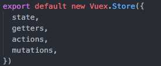

什么是Vuex
Vuex是Vue的状态管理模式。
官方定义：
Vuex 是一个专为 Vue.js 应用程序开发的状态管理模式。它采用集中式存储管理应用的所有组件的状态，并以相应的规则保证状态以一种可预测的方式发生变化。Vuex 也集成到 Vue 的官方调试工具devtools extension，提供了诸如零配置的time-travel调试、状态快照导入导出等高级调试功能。
在之前的一篇文章中讲述了Vue组件之间的信息传递，多组件开发的过程中，随着项目的逐渐庞大，组件之间的通信也变得越来越复杂，所以多组件间的数据通信和状态管理就变得越来越难以维护。多个组件都要依赖于同一个状态，并且改动的地方也是比较杂乱。
Vuex的作用就是将组件管理单独独立出来，采用集中式存储管理的方法管理状态的变化。甚至可以直接理解为作用在前端的“数据库” 。
Vuex采用单向数据流的方式来管理数据，用户界面触发Actios，改变APP的State，从而渲染出改变后的View。
完整版：
核心概念
vuex的核心就是一个容器（Store），容器中包含着需要管理的状态（State）。
一个典型的Vuex store包含：

State
state负责存储整个APP的状态数据，通过this.$store.state获取。如果将store比作是“前端数据库”，那么state可以比作是“数据库中的数据”。
Getter
store的计算属性，在从state中取回数据以后可能还需要进行二次封装处理，getter是“前端数据库”的读取操作。
Mutation
Vuex的状态存储是响应式的，store中的状态发生变化时，组件中的状态也会跟着变化。store中的状态是不能直接修改的，如果在组件中想更改store中的状态，必须使用唯一的方法“（commit）mutation” 。我们将getter比作是读取数据，那么可以将mutation比作是“修改数据”。mutation必须是同步的事件。
Action
action类似于mutation，但是和mutation又有很多不一样的地方。action解决了mutation不能异步操作的问题，mutation是直接更改state，action是提交mutation。通过dispatch触发。
Module
项目越来越复杂的时候，state对象也会变得越来越复杂，不利于管理和维护。所以引入模块的概念，将store分割成多个module，每个module都有自己的state、mutation、action、getter。
Vuex数据流向
- action处理数据
- 通过mutation提交数据更改state
- 通过getter从state中获取
具体使用方法
项目中使用Vuex
安装：1
npm install --save vuex
引入：1
2
3import Vuex from 'vuex'
import Vue from 'vue'
Vue.use(Vuex)
初始化store
在跟节点注入store对象：1
2
3
4
5
6
7
8
9// main.js
import store from './store'
new Vue({
el: '#app',
store,
template: '<App/>',
components: { App }
})
实例化store：1
2
3
4
5
6
7
8
9
10// store/index.js
const mutations = {...};
const actions = {...};
const state = {...};
Vuex.Store({
state,
actions,
mutation
});
具体示例
以上一篇的Vue中使用i18n国际化解决方案为例：
在store文件夹下建一个modules文件夹，为了解释module的用法，我们把整个应用分成一个模块app:1
2
3
4
5
6
7
8
9
10
11
12
13
14
15
16
17
18
19// store/modules/app.js
import Cookies from 'js-cookie'
const app = {
state: {
language: Cookies.get('language') || 'en'
},
mutations: {
SET_LANGUAGE: (state, language) => {
state.language = language
Cookies.set('language', language)
}
},
actions: {
setLanguage ({ commit }, language) {
commit('SET_LANGUAGE', language)
}
}
}
export default app
1 | // store/getter.js |
1 | // store/index.js |
app模块中state里只有一个状态language，
在组件中如果需要获取language:1
return this.$store.state.app.language
如果需要更改language：1
this.$store.dispatch('setLanguage', lang)